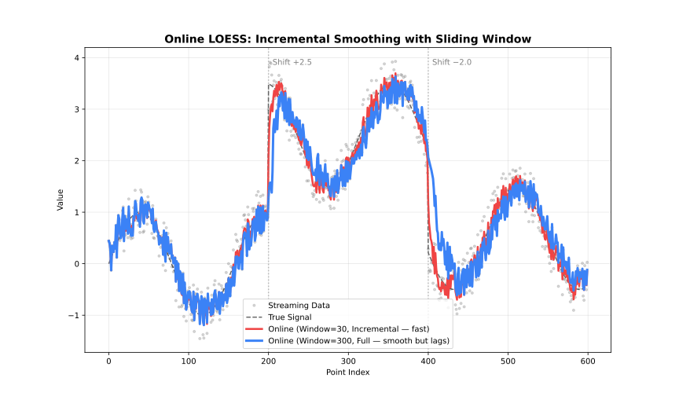

OnlineLoess API
For real-time data: processes one (x, y) point at a time and returns a smoothed value immediately once enough points have been seen.
See also: API

OnlineOptions.builder() OnlineOptions.Builder
OnlineOptions options = OnlineOptions.builder()
.windowCapacity(200)
.minPoints(10)
.build();OnlineOptions.Builder exposes all the same settings as Options.Builder (except returnSorted, returnDiagnostics, returnResiduals, cvFractions/cvMethod/cvK/cvSeed, and parallel, which are Batch-only or Batch/Streaming-only). Online always runs sequentially. confidenceIntervals/predictionIntervals/returnSe require updateMode("full"). outputs(String…) accepts "weights", "gradient"/"derivative", and "se" ("se" requires updateMode("full")). Settings:
| Setting | Type | Default | Description |
|---|---|---|---|
|
|
|
Smoothing fraction (bandwidth) |
|
|
|
Number of robustifying iterations; positive values require |
|
|
|
Kernel weight function |
|
|
|
Robustness method |
|
|
|
Residual scaling method |
|
|
|
Boundary handling policy |
|
|
|
Zero-weight handling |
|
|
|
Policy for non-finite (NaN/Inf) values in each point |
|
|
|
Auto-convergence tolerance |
|
|
empty |
Select |
|
|
|
Include |
|
|
|
Polynomial degree |
|
|
|
Number of predictor dimensions |
|
|
|
Distance metric |
|
|
|
Per-dimension weights (used when |
|
|
|
Surface computation mode |
|
|
|
Cell size for interpolation grid (smaller → more vertices, higher accuracy) |
|
|
|
Number of interpolation vertices |
|
|
|
Fall back to lower polynomial degree at boundaries when higher degrees fail |
|
|
|
Include the latest point’s local fit gradient in the result ( |
|
|
|
Confidence level for confidence intervals; requires |
|
|
|
Confidence level for prediction intervals; requires |
|
|
|
Include standard error in result; requires |
|
|
|
Maximum number of recent points retained |
|
|
|
Minimum points required before output starts |
|
|
|
How the window is updated as new points arrive |
Cross-validation, the "sorted" and "diagnostics" outputs, and parallel are Batch-only. Online residuals are always present; there is no "residuals" output name.
OnlineLoess.addPoint(double x, double y) Optional<PointResult>
Adds a single observation. Returns Optional.empty() while the window is still filling (fewer than minPoints seen so far); once populated, the PointResult holds the smoothed value for the most recently added point. Once the window reaches windowCapacity, each new point evicts the oldest one, so memory stays bounded regardless of how much history has passed through. updateMode controls how much work each call does: incremental re-fits only the newest point, while full re-smooths the entire window for a more accurate but slower result.
OnlineLoess.close()
Releases native resources. Safe to call multiple times. Implements AutoCloseable.
Options
fraction
fraction is the most important parameter: it controls the size of the local neighbourhood used at each point.
| Range | Effect | Use case |
|---|---|---|
0.1-0.3 |
Fine detail |
Rapidly changing signals |
0.3-0.5 |
Balanced |
General purpose |
0.5-0.7 |
Heavy smoothing |
Noisy data |
0.7-1.0 |
Very smooth |
Trend extraction |
iterations
iterations controls robustness to outliers, at the cost of speed.
| Value | Effect | Performance |
|---|---|---|
0 |
No robustness |
Fastest |
1-3 |
Moderate |
Recommended |
4-6 |
Strong |
Contaminated data |
7+ |
Very strong |
Heavy outliers |
weightFunction
See: Weight Functions
-
"tricube"(default) -
"epanechnikov" -
"gaussian" -
"uniform"(alias:"boxcar") -
"biweight"(alias:"bisquare") -
"triangle"(alias:"triangular") -
"cosine"
scalingMethod
See: Scaling Methods
-
"mad"(default; alias:"median_absolute_deviation") -
"mar"(alias:"median_absolute_residual") -
"mean"(alias:"mean_absolute_residual")
boundaryPolicy
See: Boundary Handling
-
"extend"(default; alias:"pad") -
"reflect"(alias:"mirror") -
"zero" -
"noboundary"(alias:"none")
zeroWeightFallback
Behavior when all neighborhood weights are zero:
| Option | Behavior |
|---|---|
|
Use the mean of the neighborhood |
|
Return the original y value |
|
Return |
missing
Policy for handling a non-finite (NaN/Inf) x or y value passed to addPoint (overrides the row-dropping behavior described in API since Online processes one point at a time):
| Option | Behavior |
|---|---|
|
Throw an error |
|
Silently ignore the point — |
autoConverge
See: Robustness
Convergence tolerance for early stopping of robustness iterations. NaN (default) disables early stopping.
returnRobustnessWeights
Populate PointResult.robustnessWeight() with the robustness weight for the latest point (from the last robustness iteration).
-
false(default) — leavesrobustnessWeight()empty -
true— populatesrobustnessWeight()
dimensions
See: Multivariate LOESS
Number of predictor dimensions. Set to match the number of columns in a multivariate x array. 1 (default) is univariate.
distanceMetric
See: Multivariate LOESS
-
"normalized"(default — scales each dimension by its range; alias:"norm") -
"euclidean"(alias:"euclid") -
"manhattan"(alias:"l1") -
"chebyshev"(alias:"linf") -
"minkowski"(use"minkowski:p"string for custom exponent, e.g."minkowski:3") -
"weighted"plusweightedMetricWeightsfor per-dimension scaling (alias:"weighted_euclidean")
weightedMetricWeights
See: Multivariate LOESS
Per-dimension weights, one per dimension declared in dimensions. Only used when distanceMetric = "weighted"; setting distanceMetric = "weighted" without providing this raises an error.
-
null(default) — has no effect unlessdistanceMetric = "weighted"is set -
A non-empty
double[]of per-dimension weights, required whendistanceMetric = "weighted"
surfaceMode
See: Polynomial Degree
-
"interpolation"(default) — evaluate at anchor vertices, blend via Hermite cubic (cell/interpolationVerticestune the vertex grid). -
"direct"— evaluate at every query point, exact.
cell
Cell size for the interpolation grid, as a fraction of the data range. Smaller values place more vertices (denser grid), improving accuracy at the cost of speed. Only applies when surfaceMode is "interpolation".
-
NaN(default) — uses the library default (0.2) -
Any value in
(0, 1]
interpolationVertices
Caps the maximum number of interpolation vertices, overriding the count implied by cell. Only applies when surfaceMode is "interpolation".
-
-1(default) — uses the library default (no explicit cap) -
Any integer
>= 1
boundaryDegreeFallback
Whether to reduce the polynomial degree at boundary vertices when the requested degree can’t be fit there (e.g., not enough neighbours). Only applies when surfaceMode is "interpolation".
-
null(default) — uses the library default (enabled) -
true— falls back to a lower degree at boundaries -
false— raises an error instead of silently falling back
returnGradient
Each local polynomial fit (degree >= linear) already computes per-dimension coefficients internally; this exposes the latest point’s gradient (dimensions values) via PointResult.gradient() at effectively no extra computation cost. Only supported when surfaceMode = "direct" — throws a RuntimeException instead of silently leaving gradient() empty if requested under the default "interpolation" mode. false by default.
confidenceIntervals
See: Intervals
Confidence level for the confidence interval around the mean response (e.g. 0.95). Only computed under updateMode("full") — throws at construction if set (or returnSe/predictionIntervals is set) while updateMode is left at its default "incremental", since incremental updates never compute standard errors. NaN (default) disables confidence intervals.
predictionIntervals
See: Intervals
Confidence level for the prediction interval for new observations (e.g. 0.95). Same updateMode("full") requirement as confidenceIntervals. NaN (default) disables prediction intervals.
returnSe
Include the standard error for the latest point in the result (PointResult.standardError()). Same updateMode("full") requirement as confidenceIntervals.
-
false(default) — leavesstandardError()empty -
true— populatesstandardError()
windowCapacity
Maximum number of most recent points kept in the sliding window; older points are discarded as new ones arrive. Each addPoint call costs O(windowCapacity) rather than growing with total history.
updateMode
See: Execution Modes
| Mode | Alias | Behavior | Speed |
|---|---|---|---|
|
|
Update only affected fits |
Faster |
|
|
Recompute entire window |
More accurate |
See API for the descriptions of all inherited settings not covered above.
PointResult accessors
| Accessor | Type | Notes |
|---|---|---|
|
|
Smoothed value. |
|
|
Standard error, if |
|
|
Residual y − smoothed; always present (there is no |
|
|
Robustness weight, if |
|
|
Robustness iterations performed; empty if not applicable. |
|
|
Confidence interval bounds, if |
|
|
Prediction interval bounds, if |
|
|
Latest point’s local fit gradient ( |
There is no Diagnostics type or returnDiagnostics option for OnlineLoess: PointResult carries no diagnostics accessor, since diagnostics like RMSE/R² need more than one point’s worth of history to be meaningful.
Example
import fastloess.OnlineLoess;
import fastloess.OnlineOptions;
import fastloess.PointResult;
import java.util.Optional;
public class Example {
public static void main(String[] args) {
final int n = 100;
double[] x = new double[n];
double[] y = new double[n];
for (int i = 0; i < n; i++) {
x[i] = i * 2 * Math.PI / (n - 1);
y[i] = Math.sin(x[i]) + 0.1;
}
OnlineOptions options = OnlineOptions.builder()
.fraction(0.5)
.windowCapacity(50)
.minPoints(3)
.build();
try (OnlineLoess model = new OnlineLoess(options)) {
Optional<PointResult> r1 = model.addPoint(x[0], y[0]);
System.out.println(r1.isPresent());
Optional<PointResult> r2 = model.addPoint(x[1], y[1]);
System.out.println(r2.isPresent());
Optional<PointResult> r3 = model.addPoint(x[2], y[2]);
r3.ifPresent(r -> System.out.println(r.y()));
}
}
}false
false
0.22659245357374927